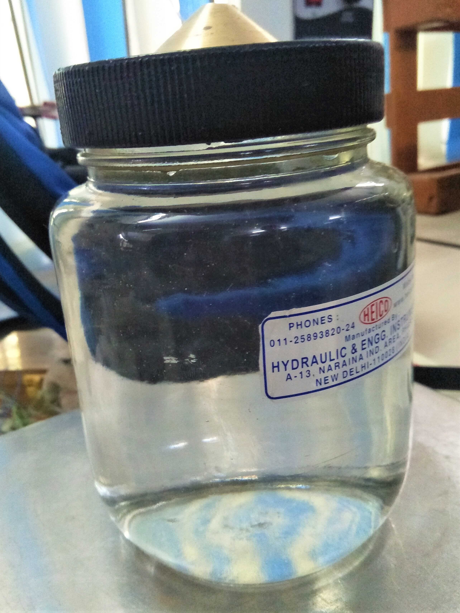

1. About 200-300 gm of air-dried soil passing 425 micron I.S sieve is to be obtained.
2. Clean and dry the Pycnometer. Tightly screw its cap. Take its mass (M1).
3. Mark the cap and Pycnometer with a vertical line parallel to the axis of the Pycnometer to ensure that the cap is screwed to the same mark each time.
4. Unscrew the cap and place about 200-300 g of dried soil in the Pycnometer. Screw the cap. Determine the mass (M2).
5. Unscrew the cap and add sufficient amount of de-aired water to the Pycnometer so as to cover the soil. Screw on the cap.
6. Shake well the contents. Connect the Pycnometer to a vacuum pump full of water and add water to pycnometer. Repeat this step until all air trapped comes out.
7. Fill the Pycnometer with water completely upto the mark. Dry it from outside. Take its mass (M3).
8. Empty the Pycnometer. Clean it and wipe it dry.
9. Fill the Pycnometer with water only. Screw on the cap upto the mark. Wipe it dry. Take its mass (M4).

10. Repeat the process for 3 times and take average specific gravity.